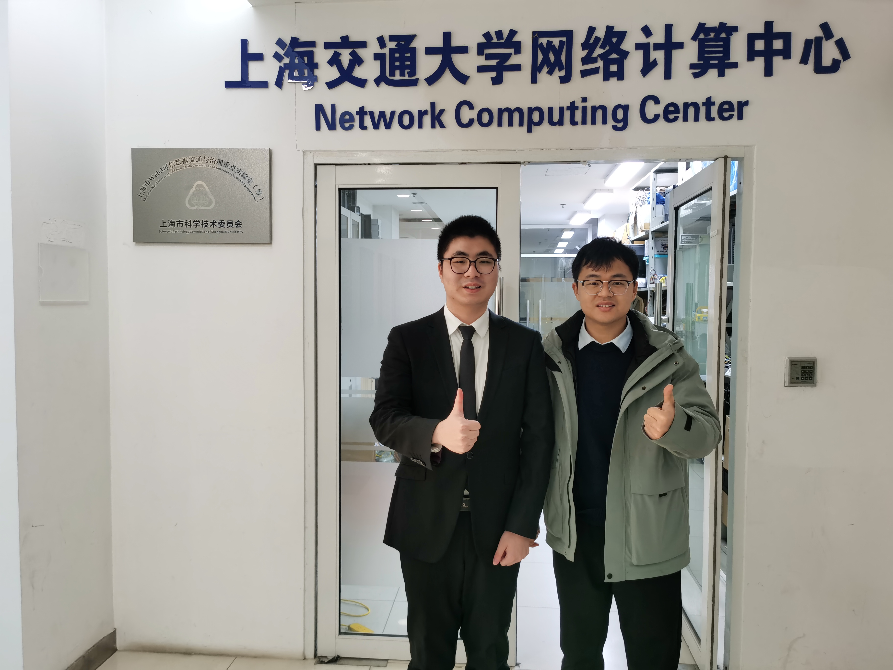

I am an Associate Researcher supervised by Professor Guangtao Xue at SJTU, and co-founder of the Cross-Research Center for Digital Twin Simulation and Intelligent Connected Sensing. My research focuses on the Internet of Things (IoT), Intelligent Sensing, and Large Language Models.
I have published over 20 papers in top-tier venues including USENIX Security, NSDI, MobiCom, and IEEE TMC. I am a recipient of the 2025 Shanghai Computer Society Science and Technology Award (First Prize).
- 2026/01 Journal accepted: "赋能空天海洋遥感：基于声学信道状态信息与人工智能算法的众包盐度感知技术" to appear in 2026. Journal
- 2026/01 MagPrint++ published in IEEE Transactions on Mobile Computing. CCF-A
- 2025/10 Paper LLM4IC4K entered Round 2 of AAAI 2026. Congratulations to Yixin and Chenzhe! CCF-A
- 2025/10 Paper NlcTCN accepted by IEEE BIBM. Congratulations to Zechen and Yiheng! CCF-B
- 2025/09 Paper MagPrint++ accepted by IEEE TMC. CCF-A
- 2025/09 Paper SingSPirit accepted by SenSys 2026. CCF-B
- 2025/09 Deployed the industry's first Anti-Surveillance Detection System in collaboration with Huawei Data Communications (99% accuracy). Industry
- 2025/08 Secured NSFC Youth Project (C class) funding! Grant
- 2024/12 Paper MagSpy accepted by IEEE TMC. Congratulations to Yongjian! CCF-A
# denotes equal contribution. Bold = Lanqing Yang.
- [1]MagPrint++: Continuous User Fingerprinting on Mobile Devices Using Electromagnetic SignalsIEEE Transactions on Mobile Computing (TMC), 2026 CCF-A
- [2]赋能空天海洋遥感：基于声学信道状态信息与人工智能算法的众包盐度感知技术Journal Article, 2026, 43(1): 42-53,62. (Chinese journal)
- [3]NLCTCN: A Non-Local Temporal Convolutional Framework for Spatiotemporal Modeling in Multichannel EEGIEEE BIBM 2025 CCF-B
- [4]Amser+: Accelerating Mobile Speech Emotion Recognition in IoT Environments With Mel Feature CompressionIEEE Internet of Things Journal, 2025 Journal
- [5]MagSpy: Revealing User Privacy Leakage via Magnetometer on Mobile DevicesIEEE Transactions on Mobile Computing (TMC), 2025 CCF-A
- [6]
- [7]Wideband RF Radiance Field Modeling Using Frequency-embedded 3D Gaussian SplattingarXiv:2505.20714, 2025 arXiv
- [8]One Walk is All You Need: Data-Efficient 3D RF Scene Reconstruction with Human MovementsarXiv:2511.16966, 2025 arXiv
- [9]The Wireless Charger as a Gesture Sensor: A Novel Approach to Ubiquitous InteractionarXiv preprint arXiv
- [10]A Large Language Model Powered Integrated Circuit Footprint Geometry UnderstandingarXiv:2508.03725, 2025 arXiv
- [11]Unleashing ChatGPT's Power: A Case Study on Optimizing Information Retrieval in Flipped Classrooms via Prompt EngineeringIEEE Transactions on Learning Technologies, 17: 629-641, 2024 Journal
- [12]VCEMO: Multi-Modal Emotion Recognition for Chinese VoiceprintsarXiv:2408.13019, 2024 arXiv
- [13]CarbonNet: Enterprise-Level Carbon Emission Prediction with Large-Scale DatasetsICIC 2024
- [14]SingAttack: Remote Attacks on Speech Recognition Systems Using Sound from Power SupplyUSENIX Security 2023 CCF-A
- [15]Acoustic Sensing and Communication Using MetasurfaceNSDI 2023 CCF-A
- [16]MAGDEFENDER: Detecting Eavesdropping on Mobile Devices using the Built-in MagnetometerSECON 2023 CCF-B
- [17]AUDIOSENSE: Leveraging Current to Acoustic Channel to Detect Appliances at Single-PointSECON 2023 CCF-B
- [18]SingMonitor: E-bike Charging Health Monitoring Using Sound from Power SuppliesMDPI Applied Sciences, 2023 Journal
- [19]Handwriting Recognition System Leveraging Vibration Signal on SmartphonesIEEE Transactions on Mobile Computing (TMC), 2022 CCF-A
- [20]ScreenID: Enhancing QRCode Security by Utilizing Screen Dimming FeatureIEEE/ACM Transactions on Networking (ToN), 2022 CCF-A
- [21]LeakPrint: Behavior-irrelevant User Identification Leveraging Leakage Current on LaptopsACM UbiComp/ISWC (IMWUT), 2022
- [22]基于窄带物联网的分布式控制技术研究空天防御, 2025, 8(2): 142-152. (Chinese journal)
- [23]MagThief: Stealing Private App Usage Data on Mobile Devices via Built-in MagnetometerSECON 2021 CCF-B
- [24]VibWriter: Handwriting Recognition System based on Vibration SignalSECON 2021 CCF-B
- [25]ScreenID: Enhancing QRCode Security by Fingerprinting ScreensIEEE INFOCOM 2021 CCF-A
- [26]MagPrint: Deep Learning Based User Fingerprinting Using Electromagnetic SignalsIEEE INFOCOM 2020 CCF-A
- [27]Poster: Toward a Secure QR Code System by Fingerprinting ScreensACM MobiCom 2020 (Poster)
- [28]Poster: Appliance Fingerprinting Using Sound from Power SupplyACM UbiComp/ISWC 2020 (Poster)
- [29]mQRCode: Secure QR Code Using Nonlinearity of Spatial Frequency in LightACM MobiCom 2019 CCF-A
- [30]Poster: Secure Visible Light Communication based on Nonlinearity of Spatial Frequency in LightACM MobiCom 2019 (Demo/Poster)
- [31]Linearity Improved Doherty Power Amplifier Using Non-Foster CircuitsIEEE Access 7: 40109–40113, 2019 Journal
- [32]Hand-free Gesture Recognition for Vehicle Infotainment System ControlIEEE VNC 2018
- First Prize 2025 Shanghai Computer Society Science and Technology Award (Science and Technology Progress Award) — project on key technologies for intelligent integration of biopharmaceutical equipment. Ranked 8th.
- Certificate of Participation, Outstanding Youth Paper Award (2020/07)
- Shanghai Outstanding Graduate
- Second Prize, National College Green Computing Competition (2018/11)
- Third Prize, IEEE VNC 2018 App Contest (2018/11)
- PI: NSFC Youth Project (C class) — "Key technologies for electromagnetic sensing of mobile IoT terminals under perception-constrained scenarios." Jan 2026 – Dec 2028. ¥300,000.
- PI: Shanghai 2024 "Science and Technology Innovation Action Plan" Natural Science Fund General Project — "Key technologies for mobile electromagnetic sensing." Oct 2024 – Sep 2027. ¥200,000.
- Key Member (3rd PI): National Key R&D Program — "Research on novel precision diagnosis and treatment strategies for cervical cancer based on multi-source heterogeneous clinical data." Jan 2026 – Dec 2027. ¥3,000,000.
- Participant: NSFC General Program — "Analysis of lesion images based on multimodal feature embedding and fusion." 2026–2029. ¥490,000.
- Participant: NSFC General Program — "Mobile computing and intelligent sensing based on electromagnetic radiation side-channel signals." 2021–2024. ¥570,000.
- Participant: NSFC Key Program — "Research on key technologies for resource optimization in edge intelligence architectures." 2020–2024. ¥2,980,000.
- 一种基于敲击声音仿真和深度学习的物体材质识别方法 — CN202510160438.4. 薛广涛, 熊权武, 杨岚青 et al. [Under substantive examination]
- 一种基于关联感知的多区域数据迁移方法以及存储系统 — CN202411319922.9. 薛广涛, 孙鹍鹏, 杨岚青. [Accepted]
- 一种企业级碳排放预测方法及其系统 — CN202410576384.5. 薛广涛, 王然, 杨岚青 et al. [Under substantive examination]
- 一种针对气隙系统的安全性优化方法 — CN202310008703.8. 薛广涛, 金星宇, 陈奕超, 杨岚青. [Authorized]
- 一种基于超声信号的服务器故障诊断技术及系统 — CN202111661426.8. 薛广涛, 陈昭熹, 杨岚青. [Under substantive examination]
- 一种基于磁感应信号的移动设备监控方法及系统 — CN201910193710.3. 薛广涛, 潘昊, 杨岚青. [Authorized]
SingAttack — Power Supply Acoustic Attack on Speech Recognition
A covert attack exploiting high-frequency sounds emitted by power supplies to inject malicious commands into speech recognition systems—completely contactless and without physical access. Demonstrated on commercial smart speakers and smartphones.
SingSPirit — Appliance Interaction via Power Supply Acoustics
Captures faint high-frequency acoustic signatures inherently emitted by power supplies and electronic components. Deep learning pipelines transform these subtle noises into rich interaction contexts—monitoring e-bike battery health, detecting anomalies, or interpreting device states without invasive sensors. Built on SingMonitor & SingAttack.
MagPrint / MagPrint++ — EM-based User Fingerprinting
A continuous fingerprinting framework exploiting unintended electromagnetic emanations captured by built-in magnetometers on commodity mobile devices. Enables high-accuracy user behavior fingerprinting and privacy auditing without specialized hardware. Evolved from INFOCOM 2020 through IEEE TMC 2026.
Anti-Surveillance Detection System
Industry-deployed system developed with Huawei Data Communications to detect covert surveillance devices with 99% accuracy. Currently in use as the industry's first production-grade solution of its kind.





- Ph.D., Shanghai Jiao Tong University — 2017–2023
- B.Eng., University of Electronic Science and Technology of China — 2013–2017
- Mobile Computing and Intelligent Sensing — Graduate Course
- Computer Networks (Class D) — Undergraduate Course
- Member, IoT Special Committee — China Computer Federation (CCF)
- Expert Reviewer for Master's Degree Theses — Ministry of Education
- Session Chair — UbiComp/ISWC 2025 and IEEE/CIC ICCC
- Reviewer — ACM MobiCom, MobiSys, IEEE TPAMI, TNNLS
- Contributor to national standard: "IoT 470 MHz/2.4 GHz Sensor Network Communication and Information Exchange — Part 1: Physical Layer Requirements and Link Layer Protocol."